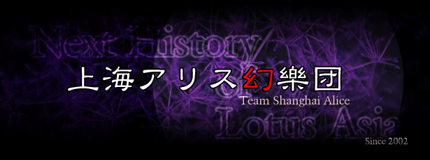

简介｜東方Project
东方Project，
（日文：東方Project（とうほうプロジェクト），英文：Touhou Project，简称：东方、车万）
是由日本同人游戏社团
上海爱丽丝幻乐团
（英文：Team Shanghai Alice，日文：上海アリス幻楽団）
（即下文所称的「官方」）所制作的一系列同人游戏、相关作品，
以及基于前者由爱好者所创作的二次创作所共同构成的覆盖游戏，动漫，音乐，文学等诸多方面的领域。

上海アリス幻楽団
“东方Project系列经过二十余年的社群文化发展，如今，当我们在日常对话中使用“东方”这个名词时，含义已不仅限于指代由官方参与制作的游戏、出版物等内容。 为了减少陈述与交流中可能出现的误解与歧义，本Wiki将“东方”一词解构为以下三种含义：
- 由官方参与创作的东方Project系列作品，即“原作”
- 没有官方参与的东方二次创作集合
- 社群构筑的东方文化模因
以上摘自THBwiki东方project词条 ，点此跳转